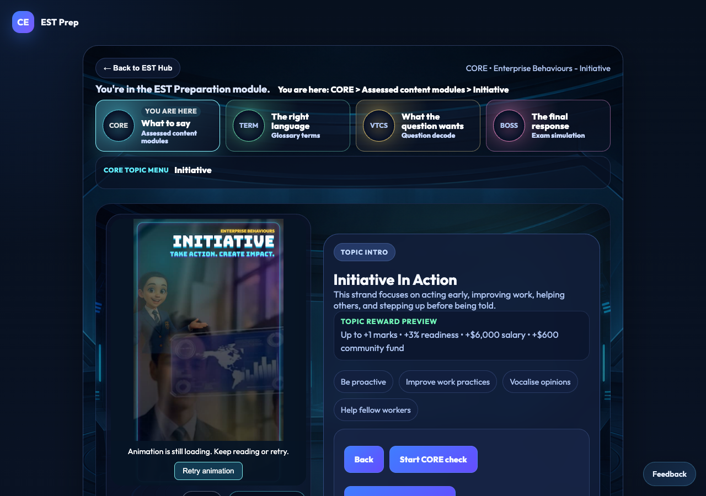
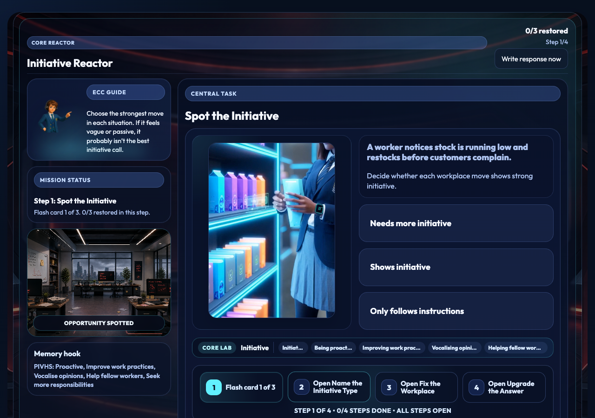
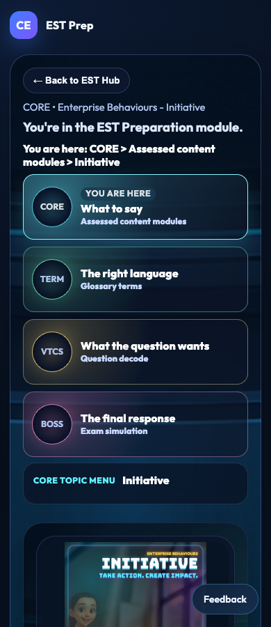
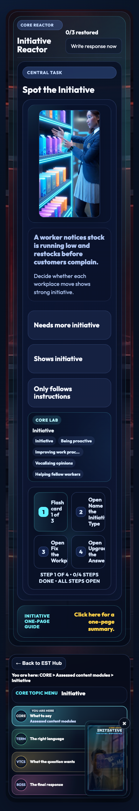

Portfolio, Careers and Core verified live
Portfolio161, Careers163 and Core164 are published and independently verified at the actual Career Empire game, commit b4f945ec5300bcd17a359f107ee1ed8d3d11b204. All419actual public runtime asset hashes and20changed runtime file hashes match. Native Chrome1280/390 verifies the shared all-in-one Portfolio form and four contexts, isolated fictional demo/all7capabilities, current-learner display safeguard, Careers camera/monitor, Core actual media and recoverable failures, preserved EST/Chapel and Market/map/Notes/Journal/Archon/same-run paths. Normal guarded publication used the exact c8bfb8d source review and genuine unchanged-version receipts.
413unit tests across90files and coverage pass;419staged assets/109imports pass. Broad browser CI logged22passes/13inherited admin/legacy-wardrobe failures before connection loss; no completed or all-CI-green claim. Actual Safari, physical-device/classroom, real authenticated saving and Tania acceptance remain separate. No school/privacy-wide certification is inferred. Original clips, shared learning bank, existing Chapel/EST geometry, separate CIf156c32 and unrelated work are preserved. Flyover startup repair remains isolated, unmerged and unpublished.
Tania to check the actual live game and Market/map links, plus the isolated fictional Portfolio demo. Retain separate Safari/physical-device/classroom/account acceptance and existing broad CI failures. Continue Flyover only as its own bounded rebase/test/source-review/release scope; do not copy the older full app over this successor.
# Core selected-media readiness and recovery —13November2026
## Exact qualified behavior
Original videos already have front-loaded playback metadata and are not rewritten. Four posters are exact1second frames from the unchanged Initiative intro/q1/q2/q3 clips. Intro, Reactor question and floating reminder keep the real poster/status until an actual playable frame; errors/delay/autoplay rejection expose Retry without blocking questions or resetting progress. The selected first Reactor clip alone preloads after the intro is playable and is reused on entry. Existing Pause/PiP controls and reminder close remain; failed play promises are handled. The game iframe shows a preparing state during initial navigation, with Return retained and stale ready callbacks guarded. No gameplay answers, rewards or curriculum content are changed.
## Checks and limits
Actual1280/390 forced source failure: real poster visible, question remains usable, Retry restores actual frames, Pause/Play works, selected Reactor and floating reminder become ready, guide/room images loaded,0page errors. Local final warmed Reactor readiness after click110ms/94ms is an observation, not an internet/Safari latency guarantee. Genuine16sec1920x1060 footage was already delivered separately; not recaptured. Original MP4 Git blobs unchanged.
413unit tests across90files with coverage pass.419staged asset hashes and109reachable imports pass. Required broad browser CI logged22passes/13inherited admin/legacy-wardrobe failures before disconnection terminated it without a final report; no all-CI-green claim.
Verified Chapel button and physical walk-in/ceiling/return/reentry pass1280/390 on this successor. Verified EST rear-window video atz21.935, four-part cabinet clearance, exterior mouse/touch pitch, four monitor cards/guides, immediate cinema/return and return to16,12.5 pass1280/390. Original Chapel/world/card/video sources and all4Initiative videos match0adc2f5;5Market handoff/return helpers are byte-identical. Notes/Archon/backend/shared learning bank and separately staged CIf156c32 are not edited.
## Privacy and learner boundaries
Anonymous Market mode keeps Initiative scope and publicInitiative=1. The dedicated portfolioDemo=1 branch runs before account access/init, suppresses account/session/backend scripts and never falls through to learner data, including with existing cookies. It loads four labelled fictional examples with varied dates and multi-capability tags; optional anonymous practice is tab memory only, reset on refresh. Both isolated routes make zero Storage API and backend calls in actual1280/390 tests. Structured identity fields are discarded; date, existing context enum, capability/subskill tags and five free-text fields are purpose-limited. Free text can contain unsolicited personal information: warnings remain; it is not automatically anonymised. Public PDF is the user-controlled native print flow. Static hosting/font requests retain their existing network metadata; no reflection is put in URLs or sent to those services.
The authenticated presentation now accepts a cached reflection only when an existing fetched employability-star review matches the current learner and class plus the exact source-evidence/task binding (and review ID when present). Equal free text and partial IDs do not prove ownership. Synthetic two-learner/class tests pass. No owner fields, auth provider, role grants, server query scope, RLS, tenancy schema, new records or permissions are introduced. Unmatched local records remain untouched and are not automatically queued under the current login; review synchronization for this display is non-persistent. This is a bounded UI/cache safeguard, not verification of the existing backend or all school tenancy controls. Older/unlinked records may remain hidden pending legitimate reconciliation; no deletion or migration occurs.
DSE1/13/14 are scoped technical checks. DSE2/DAT1 are change-specific policy/ownership applicability determinations, not product-wide passes; all existing WA questions and school-readiness gaps remain UNVERIFIED. See the separate implementation/applicability records.
## Publication state
Local qualification only. Current actual live game remains0adc2f5; the planned demo URL is not a deployment proof. Publish exact source review, obtain genuine unchanged-version receipts and normal guarded push; independently verify actual live demo/forms/Market/Careers/Core/Chapel/EST and every manifest asset. Then update actual root reader descriptions/screenshots and live closeout. Tania/Safari/physical-device/classroom acceptance remain separate.
## Exact source versions
- `Assets/EST Preparation/media-posters/initiative-intro.jpg` — `100644:8b220a820a8cb30ada07c977f5efc2be0c9fbef1`
- `Assets/EST Preparation/media-posters/initiative-q1.jpg` — `100644:1cdcada30abc18ad704871770999a7d0089aa182`
- `Assets/EST Preparation/media-posters/initiative-q2-replacement.jpg` — `100644:427846cd6fba3f368577e1bbcb6d3caebc25b798`
- `Assets/EST Preparation/media-posters/initiative-q3.jpg` — `100644:5db1fc42487ba7e08dd7c10d8d2787ce810ac42c`
- `modules/est-prep/est-media-ready.css` — `100644:22796babb264a806830f498e2b931dae872c951a`
- `modules/est-prep/est-media-ready.js` — `100644:eb5315e4fa8898547a2b3da04b575498b89b549f`
- `modules/est-prep/est-prep-content.js` — `100644:e3e3478e30b910e06db68f777c970743d4b89cc8`
- `modules/est-prep/est-prep-render.js` — `100644:af2da3e34b39cf1d0549afb2e9954a77865de271`
- `modules/est-prep/index.html` — `100644:bb6434dbe333e253d60486cc781bc3eb5e4adbb3`
- `playable-3d/app.js` — `100644:17eb2bac726ba1a33c525834e598c09fefe81368`
- `playable-3d/guest-shell.mjs` — `100644:5bf3372bcc5bdd9b787144a6257f09ebd85e8817`
- `playable-3d/index.html` — `100644:5fab60de8990aadcab8900cfe286e3ca42a9ac91`
- `playable-3d/release-manifest.json` — `100644:f052fb995e2a48f2cfb8060fef7abdc9cc0a1127`
- `tests/unit/est-media-readiness.test.mjs` — `100644:d34209ee30163b4c1150b91ffe19421ccc6bbf8c`

Actual exact qualified candidate; game publication and Tania acceptance remain separate.
Actual exact qualified candidate; game publication and Tania acceptance remain separate.
Actual exact qualified candidate; game publication and Tania acceptance remain separate.
Actual exact qualified candidate; game publication and Tania acceptance remain separate.